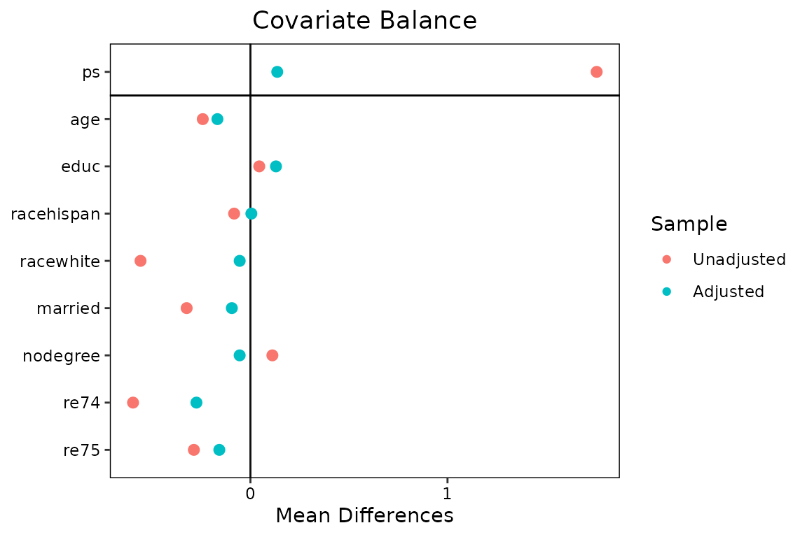

Introduction: which covariates belong in a propensity score model?
A propensity score (PS) model does not need — and should not get — every covariate that predicts treatment. What matters for the treatment-effect estimate is a different set: the confounders (covariates related to both treatment and outcome) and, for efficiency, the pure outcome predictors. Two kinds of covariates should be kept out of the PS model:
- Instruments — covariates that predict treatment but are unrelated to the outcome except through treatment. Including them increases the variance of the effect estimate without reducing bias (Brookhart et al. 2006), and, when some confounding remains unmeasured, amplifies the bias that the unmeasured confounding contributes (“Z-bias”; Myers et al. 2011). Strong instruments also push propensity scores toward 0 and 1, creating near-positivity violations and unstable weights.
- Noise variables — covariates related to neither treatment nor outcome, which only add variance.
The outcome-adaptive lasso (OAL) of Shortreed & Ertefaie (2017) automates this selection. It fits a logistic PS model with an adaptively weighted lasso penalty, where each covariate’s penalty weight is and is that covariate’s coefficient in a linear regression of the outcome on treatment and all covariates. Covariates with no outcome association get an exploding penalty and are forced out of the PS model; confounders and outcome predictors survive. The penalty strength is then tuned by the weighted absolute mean difference (wAMD), a balance criterion that weights each covariate’s post-weighting imbalance by its outcome-coefficient magnitude — so the tuning, like the penalty, is outcome-oriented.
oalasso implements OAL and its elastic-net
generalization GOAL (Baldé, Yang & Lefebvre 2023;
method = "goal"), on top of glmnet with an
exact penalty-scale correction so that the published objectives
and tuning grids are reproduced (see
vignette("method-details", package = "oalasso")). Like its
companion package psAve,
the deliverable is deliberately modest: fit$ps is a plain
numeric vector of propensity scores, ready for
MatchIt::matchit() as a distance measure,
WeightIt::weightit() as a propensity score, or
psAve::psave() as an appended candidate.
Installation
# install.packages("remotes")
remotes::install_github("kabajiro/oalasso")The solver (glmnet) and the balance machinery
(cobalt) are Imports; MatchIt,
WeightIt, and psAve are Suggests, needed only
for the corresponding downstream steps.
A first look: instruments are excluded, confounders are kept
A small simulated example in the spirit of Shortreed & Ertefaie’s
first scenario makes the selection behavior visible. x1 and
x2 are confounders, x3 and x4
predict only the outcome, x5 and x6 predict
only treatment (instruments):
library(oalasso)
set.seed(20260702)
n <- 500
X <- matrix(rnorm(n * 6), n, 6, dimnames = list(NULL, paste0("x", 1:6)))
A <- rbinom(n, 1, plogis(X %*% c(1, 1, 0, 0, 1, 1)))
Y <- as.numeric(2 * A + X %*% c(0.6, 0.6, 0.6, 0.6, 0, 0) + rnorm(n))
sim <- data.frame(A, Y, X)
fit.sim <- oal(A ~ x1 + x2 + x3 + x4 + x5 + x6, data = sim, outcome = ~ Y)
fit.sim
#> OAL (Shortreed & Ertefaie 2017, doi:10.1111/biom.12679)
#> An oal object (outcome-adaptive lasso propensity score)
#> - estimand: ATE; refit: FALSE (penalized fit)
#> - sample: 500 units (248 treated, 252 control); 6 covariate column(s)
#> - selected: delta = -10 (lambda_n = 1.02e-27), gamma = 26
#> - wAMD at the selection: 0.122
#>
#> Retained (outcome-related):
#> x1 (|b| = 0.572)
#> x2 (|b| = 0.647)
#> x3 (|b| = 0.600)
#> x4 (|b| = 0.618)
#> Excluded (outcome-unrelated):
#> x5 (|b| = 0.00339)
#> x6 (|b| = 0.06668)
#>
#> Excluded covariates showed no outcome association; excluding instruments and noise variables from a propensity score model improves precision and avoids bias amplification (Brookhart et al. 2006; Myers et al. 2011).
#>
#> Next:
#> MatchIt::matchit(A ~ x1 + x2 + x3 + x4 + x5 + x6, data = sim, distance = x$ps)
#> or: oal_match(x)
#> WeightIt::weightit(A ~ x1 + x2 + x3 + x4 + x5 + x6, data = sim, ps = x$ps, estimand = "ATE")
#> or: oal_weight(x)
#> ($ps is numeric, named by rownames(sim), strictly inside (0, 1);
#> it also satisfies psAve::psave(ps.append = cbind(oal = x$ps)).)The seed is set for the data simulation only:
oal() itself is fully deterministic (there is no
seed argument because nothing stochastic happens
inside).
Reading the printout
The printed output, top to bottom:
-
Provenance line. The first line always states
exactly which published method the fit implements, with its DOI — here
"OAL (Shortreed & Ertefaie 2017, doi:10.1111/biom.12679)". Options that leave the validated territory (a binomial outcome model,refit = TRUE, user-suppliedoutcome.coef) change or extend this label, so the printout is honest about what you can cite; a GOAL fit states whether thelambda2grid is the author’s published grid (Baldé 2025 supplement) or user-specified. -
The selected tuning point.
deltais the selected exponent from thelambdagrid (),gammathe paired penalty exponent, and (for GOAL)lambda2the selected ridge parameter, together with the achieved wAMD value. -
Retained vs excluded covariates. Covariates the
penalized PS model kept (“Retained (outcome-related)”) and dropped
(“Excluded (outcome-unrelated)”), each with its outcome-coefficient
magnitude
— the quantity that drove both the penalty and the tuning. In the
simulation above,
x5andx6(the instruments) land in the excluded list, with a one-line reminder of why exclusion is desirable (Brookhart et al. 2006; Myers et al. 2011). -
The literal next call. The printout ends by echoing
the exact
MatchIt::matchit()call (with your formula and data name) that carriesfit$psforward, or theoal_match(fit)shortcut.
If more than 5% of the propensity scores sit at the clipping bounds
(clip = c(0.01, 0.99) by default), the printout appends a
near-positivity warning and suggests method = "goal", whose
ridge term stabilizes the weights (Jones, Ertefaie & Shortreed
2023).
Workflow 1: matching
The realistic workflow uses the lalonde data from
MatchIt. The outcome argument is a one-sided
formula naming the outcome variable; the outcome (weight) model always
uses the same covariates as the PS model, which is intrinsic to the
method:
data("lalonde", package = "MatchIt")
fit <- oal(treat ~ age + educ + race + married + nodegree + re74 + re75,
data = lalonde, outcome = ~ re78)
fit
#> OAL (Shortreed & Ertefaie 2017, doi:10.1111/biom.12679)
#> An oal object (outcome-adaptive lasso propensity score)
#> - estimand: ATE; refit: FALSE (penalized fit)
#> - sample: 614 units (185 treated, 429 control); 8 covariate column(s)
#> - selected: delta = -10 (lambda_n = 1.31e-28), gamma = 26
#> - wAMD at the selection: 877
#>
#> Retained (outcome-related):
#> age (|b| = 128)
#> educ (|b| = 1062)
#> racehispan (|b| = 560)
#> racewhite (|b| = 621)
#> married (|b| = 201)
#> nodegree (|b| = 126)
#> re74 (|b| = 1920)
#> re75 (|b| = 763)
#> Excluded (outcome-unrelated):
#> (none)
#>
#> Next:
#> MatchIt::matchit(treat ~ age + educ + race + married + nodegree + re74 + re75, data = lalonde, distance = x$ps)
#> or: oal_match(x)
#> WeightIt::weightit(treat ~ age + educ + race + married + nodegree + re74 + re75, data = lalonde, ps = x$ps, estimand = "ATE")
#> or: oal_weight(x)
#> ($ps is numeric, named by rownames(lalonde), strictly inside (0, 1);
#> it also satisfies psAve::psave(ps.append = cbind(oal = x$ps)).)fit$ps is a numeric vector named by
rownames(lalonde), strictly inside (0, 1), and can be
passed directly to matchit() as the
distance:
m <- MatchIt::matchit(treat ~ age + educ + race + married + nodegree + re74 + re75,
data = lalonde, distance = fit$ps, method = "nearest")Retyping the formula and data name invites row-misalignment mistakes,
so — as in psAve — a thin wrapper reuses the formula and
data stored in the fit; all other arguments are forwarded verbatim to
matchit() and the result is an ordinary
matchit object:
m <- oal_match(fit, method = "nearest", caliper = 0.2)
summary(m)$nn
#> Control Treated
#> All (ESS) 429 185
#> All 429 185
#> Matched (ESS) 113 113
#> Matched 113 113
#> Unmatched 316 72
#> Discarded 0 0Note that matching estimates an ATT-type contrast, while
oal() tunes the wAMD with ATE weights by default (Shortreed
& Ertefaie’s convention — this differs from psave(),
whose default estimand is ATT). For a matching analysis you may prefer
to align the tuning with the estimand:
Workflow 2: weighting
For inverse probability weighting, oal_weight() hands
fit$ps to WeightIt::weightit() as the
propensity score, at the fit’s estimand by default:
w <- oal_weight(fit) # = weightit(..., ps = fit$ps, estimand = "ATE")
summary(w)
#> Summary of weights
#>
#> - Weight ranges:
#>
#> Min Max
#> treated 1.172 |---------------------------| 40.071
#> control 1.01 |-| 4.743
#>
#> - Units with the 5 most extreme weights by group:
#>
#> NSW68 NSW116 NSW10 NSW137 NSW124
#> treated 13.543 15.986 23.295 23.385 40.071
#> PSID412 PSID388 PSID196 PSID226 PSID118
#> control 4.029 4.059 4.239 4.522 4.743
#>
#> - Weight statistics:
#>
#> Coef of Var MAD Entropy # Zeros
#> treated 1.478 0.807 0.534 0
#> control 0.552 0.391 0.118 0
#>
#> - Effective Sample Sizes:
#>
#> Control Treated
#> Unweighted 429. 185.
#> Weighted 329.02 58.33Equivalently, weights(fit) returns the IPW weights
implied by fit$ps at the fitted estimand directly, without
WeightIt:
How the tuning works: the wAMD criterion
For each candidate penalty
on the grid (lambda supplies the exponents
;
the default is Shortreed & Ertefaie’s grid), oal() fits
the penalized PS model, forms IPW weights
from the clipped scores, and computes the weighted absolute mean
difference
summed over all covariate columns (on the standardized
scale), including those the model excluded. The grid point minimizing
wAMD is selected. Because each covariate’s imbalance is weighted by its
outcome-coefficient magnitude
,
residual imbalance on an instrument (with
)
costs almost nothing — the criterion deliberately does not reward
balancing covariates that cannot cause confounding. Each
is paired with a penalty exponent
so that the pair satisfies the method’s theoretical rate conditions;
vignette("method-details", package = "oalasso") gives the
formulas, the provenance of every default, and the exact
glmnet correction that makes the published objective
reproducible.
The criterion path is stored and plottable:
plot(fit, type = "wamd")and oal_wamd() — the exported single source of truth for
the criterion — scores any candidate propensity score on the
same formula, which is convenient for comparing an OAL score against an
external one.
summary(), balance, and the other accessors
summary(fit)
#> OAL (Shortreed & Ertefaie 2017, doi:10.1111/biom.12679)
#> Summary of an oal fit
#> Call: oal(formula = treat ~ age + educ + race + married + nodegree + re74 + re75, data = lalonde, outcome = ~re78)
#>
#> Estimand: ATE; criterion: wamd (weighted absolute mean difference); refit: FALSE
#> Sample: 185 treated, 429 control
#> Selected: delta = -10 (lambda_n = 1.31e-28), gamma = 26; wAMD = 877
#>
#> Selection table (outcome coefficients on the standardized scale):
#> term outcome.coef penalty.factor coef selected role
#> 1 age 128.234 1.56e-55 0.016 TRUE retained
#> 2 educ 1061.689 2.11e-79 0.161 TRUE retained
#> 3 racehispan 560.127 3.50e-72 -2.082 TRUE retained
#> 4 racewhite 620.617 2.44e-73 -3.065 TRUE retained
#> 5 married 200.536 1.39e-60 -0.832 TRUE retained
#> 6 nodegree 125.523 2.71e-55 0.707 TRUE retained
#> 7 re74 1919.923 4.31e-86 0.000 TRUE retained
#> 8 re75 763.035 1.13e-75 0.000 TRUE retained
#>
#> Best grid row per lambda2 (by wAMD):
#> lambda2 delta lambda.n gamma s wamd n.selected refit.converged
#> 1 NA -10 1.31e-28 26 1.14e-86 877 8 NA
#> selected
#> 1 TRUE
#>
#> Outcome (weight) model: lm(y ~ A + X)
#> term estimate se
#> 1 (Intercept) 6330 366
#> 2 A 1550 781
#> 3 age 128 321
#> 4 educ 1060 418
#> 5 racehispan 560 328
#> 6 racewhite 621 385
#> 7 married 201 343
#> 8 nodegree 126 409
#> 9 re74 1920 377
#> 10 re75 763 345
#>
#> Balance (original-scale covariates):
#> smd.un smd.wt ks.un ks.wt
#> age 0.242 0.168 0.158 0.191 *
#> educ 0.045 0.130 0.111 0.077 *
#> racehispan 0.277 0.016 0.083 0.005
#> racewhite 1.408 0.138 0.558 0.055 *
#> married 0.721 0.210 0.324 0.094 *
#> nodegree 0.235 0.116 0.111 0.055 *
#> re74 0.596 0.274 0.447 0.312 *
#> re75 0.287 0.158 0.288 0.153 *
#> ---
#> '*' = weighted SMD > 0.1summary() shows the full per-covariate selection table
(fit$selected: outcome coefficient, penalty factor, PS
coefficient, retained/excluded role), a summary of the tuning path, the
outcome-model coefficient table, and a covariate balance table
(fit$balance: unweighted and weighted SMD and KS
statistics, computed by cobalt with the selected weights —
the same layout as psave$balance).
Balance is also available through the cobalt generic,
and as a Love-style plot:
cobalt::bal.tab(fit)
#> Balance Measures
#> Type Diff.Adj
#> ps Distance 0.1361
#> age Contin. -0.1675
#> educ Contin. 0.1296
#> racehispan Binary 0.0047
#> racewhite Binary -0.0546
#> married Binary -0.0944
#> nodegree Binary -0.0547
#> re74 Contin. -0.2740
#> re75 Contin. -0.1579
#>
#> Effective sample sizes
#> Control Treated
#> Unadjusted 429. 185.
#> Adjusted 329.02 58.33
plot(fit, type = "balance")
#> Warning in cobalt::love.plot(x = cobalt::bal.tab(x = structure(list(ps = c(NSW1 = 0.638720962917443, : Standardized mean differences and raw mean differences are present in the same
#> plot. Use the `stars` argument to distinguish between them and appropriately
#> label the x-axis. See `love.plot()` for details.
Further accessors: coef(fit) (PS coefficients, original
or standardized scale), predict(fit, newdata) (propensity
scores for new data, no refitting machinery needed), and
fit$path / fit$sets /
fit$coef.path for the full grid history (kept unless
keep.path = FALSE).
GOAL, in one paragraph
When covariates are strongly correlated or positivity is fragile,
plain OAL can select erratically among correlated confounders and
produce unstable weights. method = "goal" adds an
elastic-net ridge term
to the objective (Baldé, Yang & Lefebvre 2023), selected jointly
with
by the same wAMD criterion; lambda2 = 0 is always on the
grid, so GOAL nests plain OAL and can never do worse on the criterion.
The default lambda2 grid is the author’s published grid
(Baldé 2025 supplement, “taken from Zou and Hastie (2005)”), and the
printed provenance line says so. See the method-details vignette.
fit.goal <- oal(treat ~ age + educ + race + married + nodegree + re74 + re75,
data = lalonde, outcome = ~ re78, method = "goal")Practical policies worth knowing
-
Missing data are an error, never a silent drop. Any
NAin the treatment, the PS covariates, or the outcome variable stops with a message naming the offending variables. Impute first if that is your analysis plan. -
Everything is deterministic. Same data, same
arguments, same result — there is no
seedargument. -
Using the outcome at the design stage is by design.
OAL uses outcome coefficients to decide which covariates to
select, not to pick the estimate you like; the treatment-effect
estimation itself stays downstream in
MatchIt/WeightIt/survey/marginaleffects.
Where to go next
-
vignette("psave-integration", package = "oalasso")— appending the OAL score as a candidate inpsAve::psave(), when that composition helps, and its caveats. -
vignette("method-details", package = "oalasso")— all formulas, the exactglmnetpenalty-scale correction, the provenance of every default, differences from the author’s legacy code, and honest notes on nonlinear extensions.
References
Baldé, I., Yang, Y. A., & Lefebvre, G. (2023). Reader reaction to “Outcome-adaptive lasso: Variable selection for causal inference” by Shortreed and Ertefaie (2017). Biometrics, 79(1), 514–520. doi:10.1111/biom.13683
Brookhart, M. A., Schneeweiss, S., Rothman, K. J., Glynn, R. J., Avorn, J., & Stürmer, T. (2006). Variable selection for propensity score models. American Journal of Epidemiology, 163(12), 1149–1156. doi:10.1093/aje/kwj149
Jones, J., Ertefaie, A., & Shortreed, S. M. (2023). Rejoinder to “Reader reaction to ‘Outcome-adaptive lasso: Variable selection for causal inference’ by Shortreed and Ertefaie (2017)”. Biometrics, 79(1), 521–525. doi:10.1111/biom.13681
Myers, J. A., Rassen, J. A., Gagne, J. J., Huybrechts, K. F., Schneeweiss, S., Rothman, K. J., Joffe, M. M., & Glynn, R. J. (2011). Effects of adjusting for instrumental variables on bias and precision of effect estimates. American Journal of Epidemiology, 174(11), 1213–1222. doi:10.1093/aje/kwr364
Shortreed, S. M., & Ertefaie, A. (2017). Outcome-adaptive lasso: Variable selection for causal inference. Biometrics, 73(4), 1111–1122. doi:10.1111/biom.12679